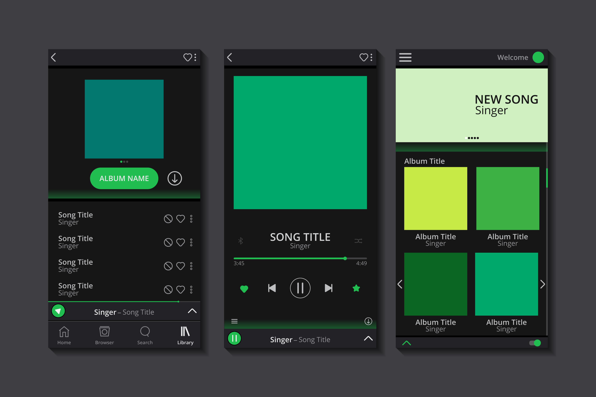

Las 5 Web Apps más famosas
Herramientas empleadas en su desarrollo
Lenguajes de programación:
PHP: Originalmente, Facebook fue construido principalmente con PHP, un lenguaje de scripting ampliamente utilizado para el desarrollo web.
Hack: Facebook desarrolló Hack, un lenguaje que se basa en PHP pero incluye características de tipado estático, mejorando el rendimiento y la seguridad.
Frameworks y bibliotecas:
GraphQL: Un lenguaje de consulta para API que permite a los clientes solicitar exactamente los datos que necesitan, desarrollada por Facebook.
React: Una biblioteca de JavaScript para construir interfaces de usuario, que permite crear componentes reutilizables y gestionar el estado de la aplicación.
Bases de datos:
MySQL: Utilizado para el almacenamiento de datos. Facebook ha realizado personalizaciones significativas para optimizar su rendimiento a gran escala.
Cassandra: Una base de datos NoSQL utilizada para manejar grandes volúmenes de datos y ofrecer alta disponibilidad.
Link a su Web App
Herramientas empleadas en su desarrollo
Lenguajes de programación:
Java: Utilizado ampliamente en el backend para construir servicios escalables y robustos.
Python: Utilizado para scripts y herramientas de automatización, así como en algunos servicios de backend.
Frameworks y bibliotecas:
Spring: Un marco de trabajo para el desarrollo de aplicaciones en Java, muy utilizado en los servicios de backend.
Node.js: Utilizado para construir aplicaciones en tiempo real y microservicios.
Bases de datos:
Amazon DynamoDB: Una base de datos NoSQL completamente gestionada que permite un rendimiento rápido y escalabilidad.
Amazon RDS (Relational Database Service): Permite gestionar bases de datos SQL, como MySQL y PostgreSQL.
Link a su Web App

Herramientas empleadas en su desarrollo
Lenguajes de programación:
Erlang: Utilizado principalmente para el backend, gracias a su capacidad para manejar múltiples conexiones simultáneas y su robustez en sistemas distribuidos.
Java: Utilizado en el desarrollo de la aplicación para Android.
Protocolos de comunicación:
WhatsApp utiliza el protocolo XMPP (Extensible Messaging and Presence Protocol) para la mensajería en tiempo real.
Servidores:
Utilizan servidores Linux para el alojamiento y la gestión de sus servicios.
Link a su Web App

Herramientas empleadas en su desarrollo
Lenguajes de programación:
Java: Utilizado en el backend para manejar servicios de música y streaming.
Python: Empleado para scripting, análisis de datos y ciertas partes del backend.
Frameworks y bibliotecas:
Apache Kafka: Para la transmisión de datos en tiempo real y procesamiento de eventos.
Redux: Para la gestión del estado en aplicaciones React.
Bases de datos:
Cassandra: Utilizada para el almacenamiento de grandes volúmenes de datos distribuidos y escalables.
PostgreSQL: Base de datos relacional utilizada para datos estructurados.
Link a su Web App

Herramientas empleadas en su desarrollo
Lenguajes de programación:
Java: Utilizado en el backend para manejar servicios de música y streaming.
Python: Empleado para scripting, análisis de datos y ciertas partes del backend.
Frameworks y bibliotecas:
Apache Kafka: Para la transmisión de datos en tiempo real y procesamiento de eventos.
Redux: Para la gestión del estado en aplicaciones React.
Bases de datos:
Cassandra: Utilizada para el almacenamiento de grandes volúmenes de datos distribuidos y escalables.
PostgreSQL: Base de datos relacional utilizada para datos estructurados.
Link a su Web App